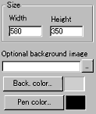
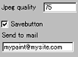
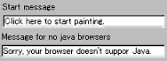

| |
|
Applet
Tutorials: Anfy Paint
|
| Anfy Paint applet |

|
|
This applet is a complete paint program, with freehand
and geometric drawing tools. It is possible to save painted images
to the web space where you place the applet, via the mailserver
(smtp, port 25). The images will be sent to a specified e-mail address,
as attached JPG files. This will allow everyone to receive paintings
from their visitors, to build graphical bookmarks, or interactive
virtual galleries. If a background image is specified, the applet
becomes a colouring book.
[More technical
information about the available parameters can be found here.]
Most parameters are self-explanatory and you can
always see brief description of each parameter by moving the mouse
pointer over the wizard.
|
 |
First, set the applet size (Width, Height) and
a background image, or alternatively a background colour. Then,
decide the initial pen colour; pen colour itself can be changed
by users later. |
|
 |
This applet has a function of saving
painted works as jpeg images sent to a selected email address.
If you want to enable this function, just check the "Save
button", and enter the send-to address below. |
|
| You can decide the jpeg compression rate
in percentage at Jpeg quality box. |
 |
Optionally, you may want to change the message
which is displayed when you first execute the applet. |
|
|
In default, "Click here to start painting"
will be shown.
Since, this applet has no Expert
Menu, you may want to place a message for non Java™ capable
browsers.
We have only discussed about the anfypaint specific
parameters. For generic parameters, please read wizard
section.
|
|